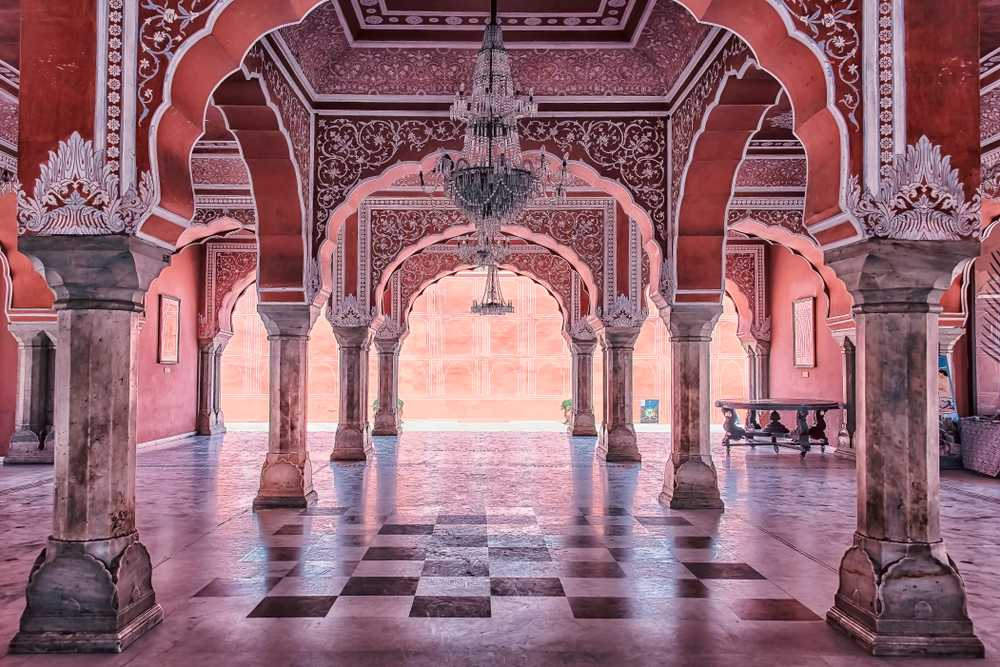
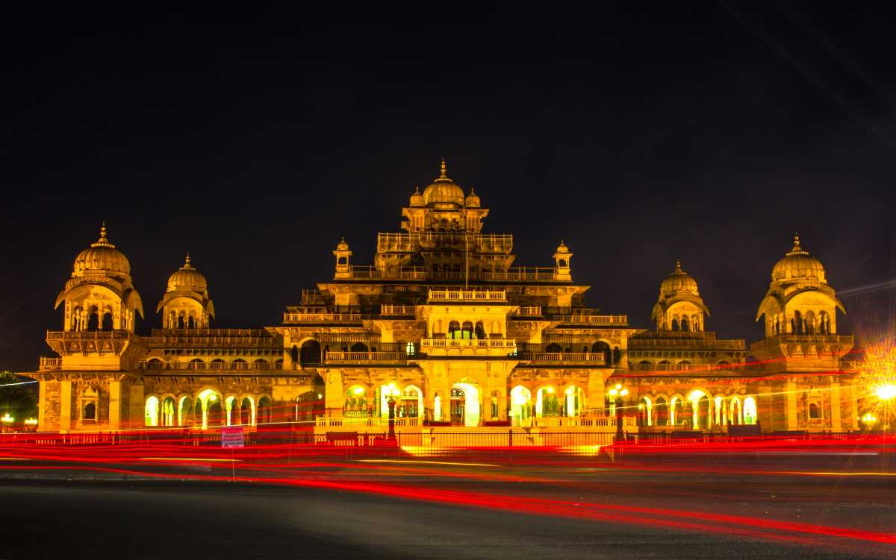

PLACES TO VISIT

AMER FORT
Cradled on the top of a hill near Jaipur lies the Amer Fort, one of the most magnificent palaces in India. Also commonly known as the Amber Fort, this majestic building with its maze-like passagesers.

JANTAR MANTAR JAIPUR
Located near the City Palace in the regal city of Jaipur, Jantar Mantar is the largest stone astronomical observatory in the world. Owing to its rich cultural, heritage and scientific value, Jantar Mantar in Jaipur has also been featured on UNESCO's list of World Heritage Sites

HAWA MAHAL
urThe massive edifice of Hawa Mahal stands at the intersection of the main road in Jaipur, Badi Chaupad and was built by Maharaja Sawai Pratap Singh in the year 1799. Hawa Mahal derives its name from its unique structe .

CITY PALACE
The magnificent City Palace in Jaipur is one of the most famous tourist attractions located in the old part of the city. Built by Maharaja Sawai Jai Singh during the years 1729 to 1732, the vast complex of the palace occupied one-seventh of the walled city

ALBERT HALL MUSEUM

Plan My Trip